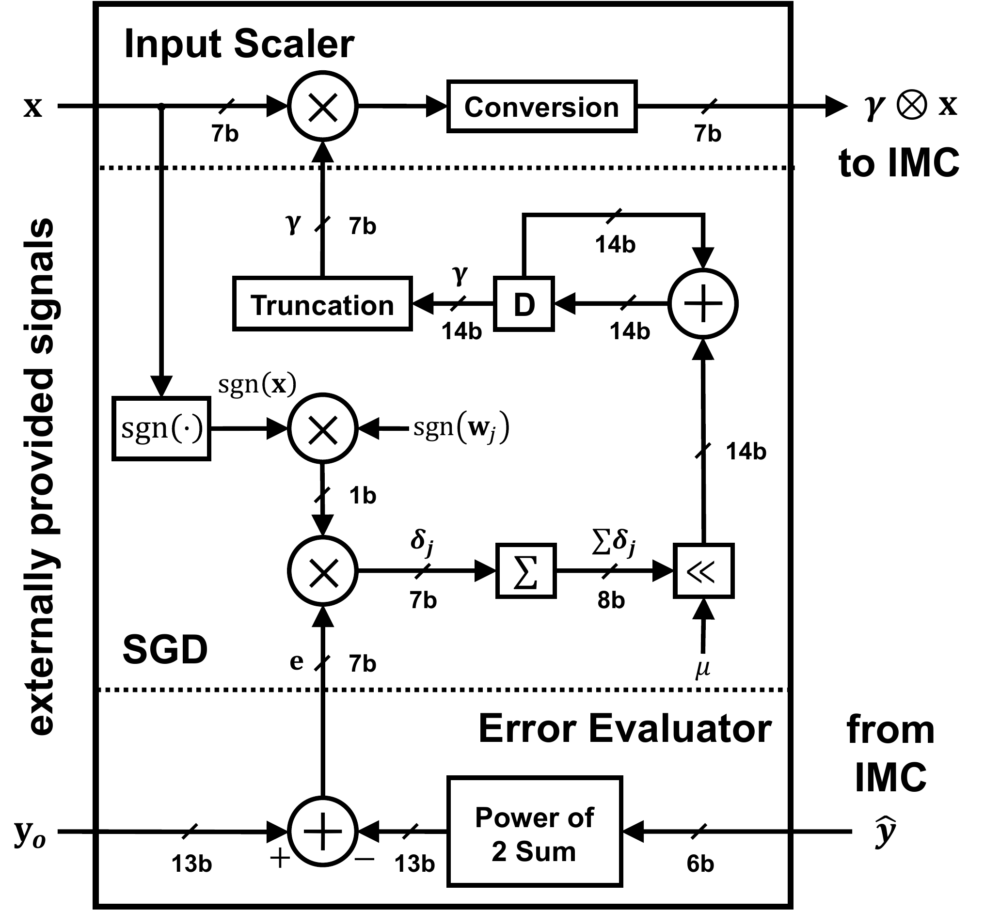
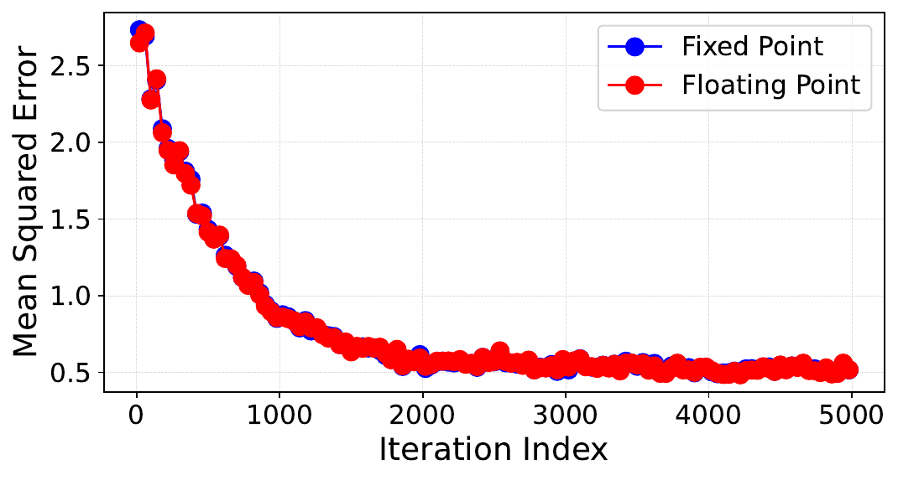
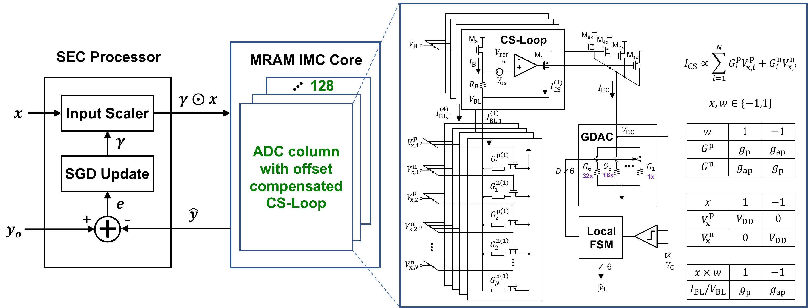

Behavioral model → SEC/OCCS co-design
Start with the error, then design the correction.
A behavioral model reveals how each activated row is attenuated. That spatial pattern becomes the SEC factorization, the fixed-point datapath, and the sensing architecture implemented in silicon.
01 · Behavioral model
Model the complete signal path.
The model couples device variation and interconnect to readout and quantization. It exposes how array size, row ordering, precision, and compensation reshape the distribution seen at the ADC output.
| MRAM device | Parallel/antiparallel conductance states and MTJ variability. |
|---|---|
| Array network | Bitline and sourceline resistance, position-dependent voltage loss, and row activation. |
| Column formation | Differential signed weights and four binary-weighted physical columns per ADC column. |
| Readout | Sensor noise, column gain/offset, and 6-bit ADC quantization. |
| Cross-check | Ideal, nonideal, and circuit-simulation CSV comparisons across controlled sweeps. |
The key observation is spatial.
The same logical activation produces a different analog contribution depending on its physical row. Near- and far-end patterns can bend to opposite sides of the ideal transfer line, with large relative error near a zero-valued dot product.
Model output: a row- and column-indexed attenuation map, raw current/ADC distributions, and matched ideal/nonideal vectors that can drive SEC architecture studies.
JxCDC 2024
Energy-Accuracy Trade-Offs for Resistive In-Memory Computing Architectures develops the parallel-bar behavioral/SNDR framework and validates it against the measured 22 nm MRAM prototype. JSSC carries the resulting structured attenuation into the SEC architecture.
Every logical product contributes with unit gain.
captures the location-dependent analog attenuation.
Learning makes over the training distribution.
02 · Error abstraction
Turn parasitics into factors the architecture can act on.
Let describe the attenuation for row as observed by column . SEC applies one learned to row across the bank, then normalizes each output column with .
captures how row position and column shape a cell’s analog contribution through BL/SL parasitics.
One per row
Sharing the input-side correction across ADC columns avoids storing a full correction matrix.
Fit the physical die
On-chip stochastic-gradient updates adapt to instance-specific parasitics that are unknown before fabrication.
One per column
Output normalization absorbs column gain so that statistically.
→→
Row position directly modulates the contribution delivered to each ADC column.
→→→
Input pre-scaling and output normalization flatten the systematic spatial response.
03 · Precision selection
Use convergence studies to freeze the fixed-point path.
Floating-point SEC establishes the algorithmic target. Quantized sweeps then choose widths that preserve convergence while bounding area and switching energy. The implemented inference scale is 7 bit, backed by a 14-bit update accumulator; a power-of-two learning rate enables shift-based updates.

| Inference factor | 7-bit path selected from behavioral quantization sweeps. |
|---|---|
| Update state | 14-bit accumulator retains the smaller training increments. |
| Learning rate | Power-of-two permits a shift in place of a general multiplier. |
| Validation | Fixed- and floating-point learning trajectories remain closely aligned. |
| Learning target | Hardware correction state is calibrated while application-model weights remain fixed. |

04 · Circuit co-design
Coordinate array correction with offset-compensated sensing.
SEC addresses structured array error, but static mismatch and PVT sensitivity in the column sensor can still consume the available signal margin. The offset-compensated current sensor (OCCS) therefore changes both the level-shifting element and the operating sequence.
Capture static offset
An auto-zero phase stores mismatch before the array current is evaluated.
Reduce PVT dependence
A resistor replaces the prior transistor level shifter to stabilize the sensing bias.
Resolve a small current step
The evaluation phase presents an offset-reduced signal to the 6-bit SAR conversion path.
Circuit simulation
Monte Carlo analysis quantifies the bitline-voltage variation and reports roughly 17% OCCS area overhead relative to the prior CGFBS sensing loop.
05 · Integrated macro
Preserve the signal definition across memory, conversion, and correction.
Each ADC column combines four binary-weighted physical columns. Differential MRAM storage and wordline selection implement signed operations; multibit activations are evaluated bit-serially.

Architecture resultBehavioral modeling determines the compensation structure and precision; OCCS preserves the analog margin that SEC then uses at bank scale.
Design review checklist
Questions that carried from model to layout.
- Is each modeled nonideality physical, calibrated, and separable from numerical quantization?
- Does the compensation structure scale with rows and columns more slowly than a full matrix?
- Do fixed-point widths preserve convergence across the expected range and multiple seeds?
- Are saturation, rounding, reset, and update ordering defined at bit accuracy?
- Can the sensor resolve the post-parasitic current step across PVT and mismatch?
- Are physical 1T1R cells and logical differential 2T2R weights distinguished in verification?
- Can every internal training and inference mode be reached through the test interface?
- Does the measurement plan estimate noise and distortion over comparable code populations?